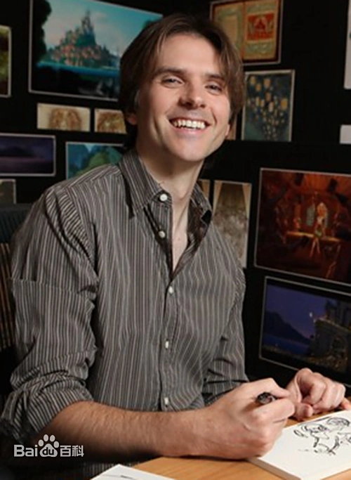
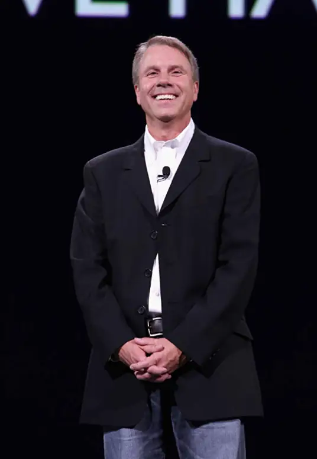

迪士尼资深动画导演，曾执导《魔发奇缘》《闪电狗》等经典作品。在《疯狂动物城》中，他创新性地构建了哺乳动物共存的世界观。布什从第一部起就深度参与剧本构建，提出了“偏见是座大山”的核心主题，将社会议题巧妙融入合家欢动画中
创作理念：
"我们想探讨偏见与包容，通过动物寓言反映人类社会。每个角色都经过生物学研究，确保其特性符合真实动物行为。"
"朱迪的故事告诉我们：体型大小不能决定你的成就上限，打破成见才能创造无限可能。"
他认为动物城是一个可以持续讲述故事的完整世界，希望观众能以幽默安全的方式面对现实问题
他带领团队耗时五年研发动物毛发渲染技术，创造了影史上最复杂的动画场景之一。影片获得第89届奥斯卡最佳动画长片奖。
动画界传奇人物，曾凭《无敌破坏王》获奥斯卡提名。在《疯狂动物城》中负责角色塑造和喜剧节奏把控。
角色设计哲学：
"我们给每个动物设计了符合其物种特性的职业，比如行动缓慢的树懒当DMV员工，这种反差制造了绝妙的喜剧效果。"
摩尔特别注重角色互动中的社会隐喻，将狐狸尼克的狡黠与兔子的天真转化为探讨偏见的叙事工具。
"闪电车管局的场景原本只有15秒，但树懒的表演如此精彩，我们扩展成了经典片段。"
他与布什早在14年前就开始构思动物城的世界观蓝图，设想一个涵盖多种生态区、适合所有动物生存的城市
他主导设计的"动物城"地铁系统，融合了不同动物区的建筑风格，成为动画设计的教科书案例。
故事架构大师，曾参与《森林战士》剧本创作。在《疯狂动物城》中构建了完整的动物社会体系。
世界观构建：
他带领生物学顾问团队，为54种动物设计了符合生态特征的社会角色。从极地动物的"冰川镇"到沙漠动物的"撒哈拉广场"，每个区域都有独特的生态系统。
剧本历经18次重大修改，最初版本中尼克才是主角，后调整为双主角结构。布什表示："朱迪打破偏见的旅程更能引起共鸣。"
"最复杂的场景是警察局，我们要让不同体型的动物都能合理使用同一空间，为此设计了可调节的办公设备。"
他创造的"哺乳动物大都会"包含100多个独特场景，细节密度打破迪士尼动画纪录。

迪士尼金牌制片人，参与作品包括《无敌破坏王》《冰雪奇缘》。负责统筹《疯狂动物城》的全球制作资源。
技术突破：
他协调500人团队开发了新的毛发渲染系统"iGroom"，可处理单帧千万毛发量。最复杂的角色是旅鼠，每只拥有约480万根毛发。
为解决动物比例问题，团队开发了动态场景系统：同一个道具在不同动物区有不同尺寸版本。
"最艰巨的任务是让观众相信食肉动物和猎物能和平共处，我们在视觉细节上投入了前所未见的精力。"
他主导的全球营销策略使影片成为2016年全球票房冠军，中国票房突破15亿元，创迪士尼动画纪录。
影片获得金球奖、安妮奖等37项大奖，被《时代周刊》评为年度十大佳片。